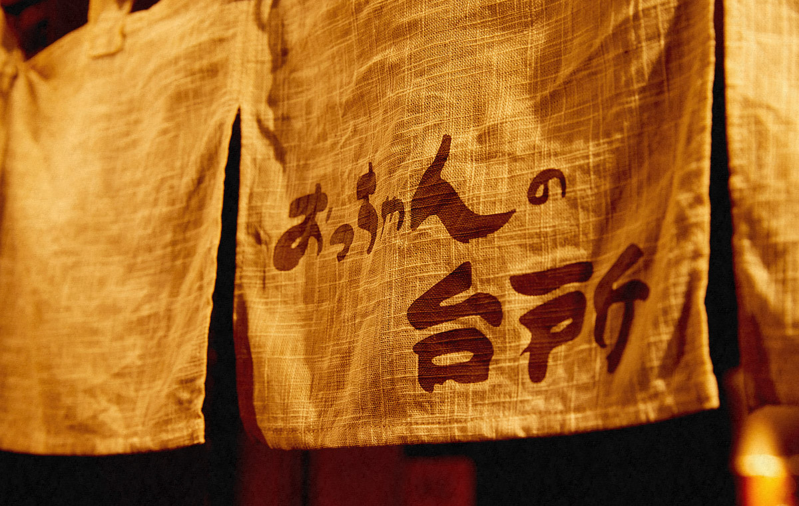
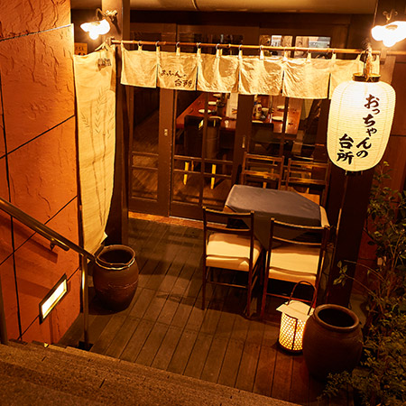
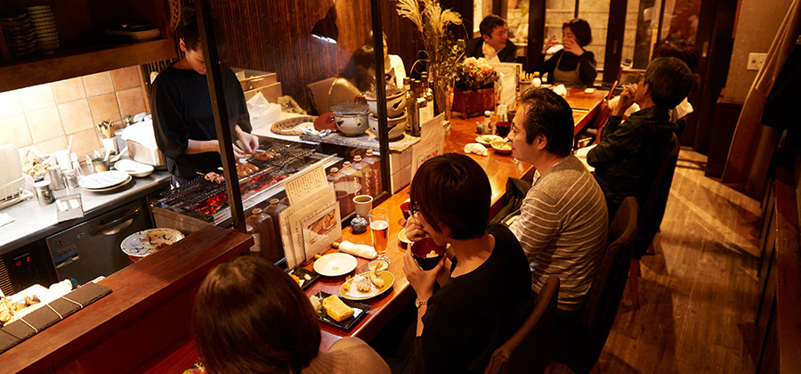
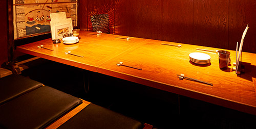
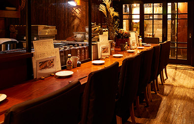

吉祥寺駅北口近くの隠れ家居酒屋「おっちゃんの台所」。木の温もりとやわらかな明かりで、落ち着いた雰囲気を大切にしている当店。 皆様にリラックスしてお過ごしいただけるよう、できるだけ席間を広くとった お店作りをしています。カウンターは女子一人飲みやディナーデートにおすすめです。 周りを気にせずに、プライベートな時間をお過ごしいただける 小上がりのお座敷個室もございます。女子会、宴会、飲み会、 忘年会、新年会、歓送迎会などお集まりに人気のお席なので、 ご希望の際はお早めにお問い合わせください。貸切もどうぞ。